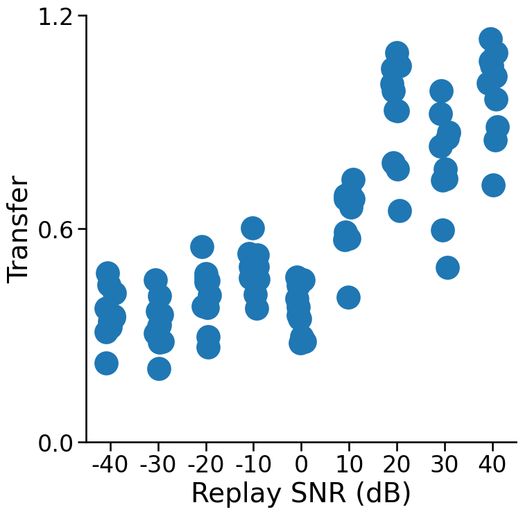

<br> <br> ## Contrastive Lifelong Learning <br> <br> <br> <br> <br> <br> Jayanta Dey July 17, 2024 --- ## Research Questions? - How much capacity do we need to learn T tasks? - What is the quality of replay we need? - How should we learn a common representation? --- ### So what makes Forward trasnfer so easy? (Experiments to be done) - Forward transfer reduces if we reduce the number of pretraining classes. - Forward transfer reduces if we reduce the resolution of the pretraining images. --- ## A simple learning example - $s =(x_i,y_i)$, $i \in \lbrace 1, 2, \ldots, 200 \rbrace$ - $x \in \mathbb{R}^{10}$, first $2$ dimensions contain signal - $y \in \lbrace 0,1 \rbrace$ - we desire to learn a classifier that minimizes expected misclassification rate --- ## Simulation --- <img src="../images/rock20/s2.png" style="position:absolute; top:0px; left:100px; height:100%;"/> --- <img src="../images/rock20/s3.png" style="position:absolute; top:0px; left:100px; height:100%;"/> --- <img src="../images/rock20/s3a.png" style="position:absolute; top:0px; left:100px; height:100%;"/> --- ## Partition Kernel A kernel is a positive semi-definite (PSD) function $k(a,b) : \mathcal{I} \times \mathcal{I} \to R$ that is used to indicate the similarity of two points $a,b$ in a space $\mathcal{I}$. --- --- ## Algorithm - Use partition kernel to weight contrastive loss - Train only corresponding head with each task and fine tune encoder each time - Do unsupervised replay --- ## Simulation Result --- ## SNR of Replay vs. Transfer  --- ## Questions?